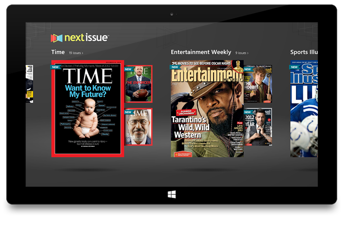
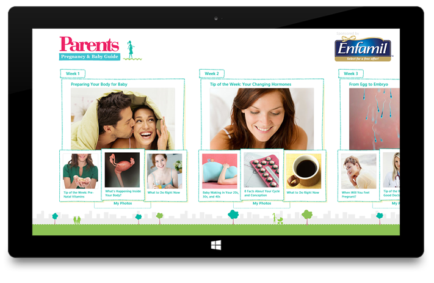
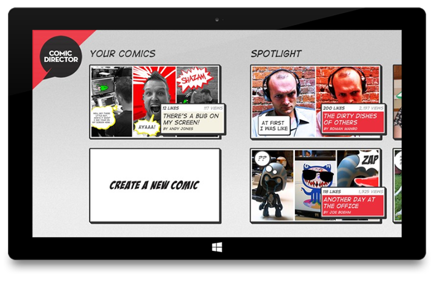
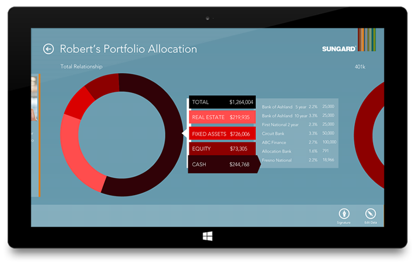
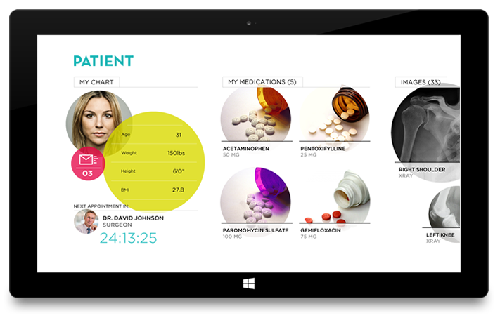
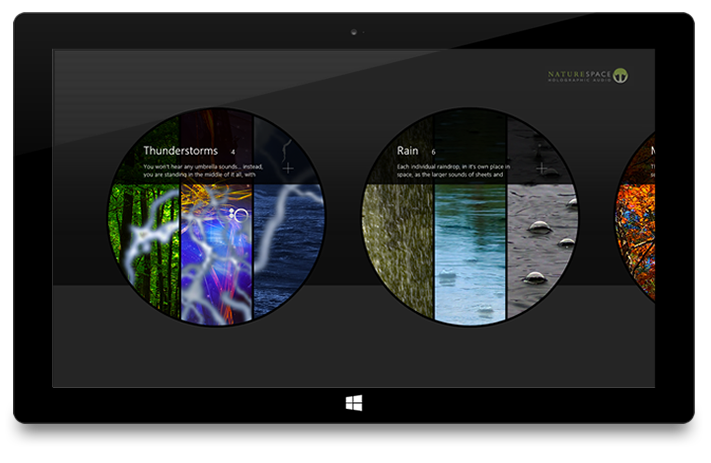

APP BAR
Windows 8 guidelines suggest that the app bar is a single-color rectangle, 88px high, that stretches completely across the screen. We have taken this guideline and interpreted it our own way. If your app is an app about bubbles, for instance, why would you have a plain rectangle for an app bar? Make it round. If you have an app about golf courses, why not make the top flow like the rolling landscape often found in golf courses? Now, don't get too crazy. Always think of the user when designing your app as the guidelines are there for them. Maintain the minimum app bar icon size, and proper padding, and keep it reserved for actions only, and keep it anchored in the bottom of the screen but beyond that, be creative. If a custom app bar design supports your brand and provides a fun experience for your users, have at it! Take a look at some app bar designs that we took from standard to innovative.
SEMANTIC ZOOM
Think of semantic zoom conceptually as a re-imagination of your content. It doesn't have to be constrained to a standard layout of plain boxes that are 80px apart, or constrained to a single width at all. Use semantic zoom to your advantage by creatively displaying your content in a way that is easy to navigate, provides value, and is engaging. For instance, if you had a clothing store each hub might be particular elements of clothing such as coats, pants, shoes, and shirts. Upon entering semantic zoom, showing the user an image of a person with those areas clearly defined is a great way to re-envision your hubs into an easily navigable view of your content. Here, we compare some of our semantic zoom designs, showing the basic Windows 8 standard, with what we turned it into.
Don’t just make navigation easy, make it interesting and contextual.
In this one, we reorganized the data from the screen this semantic zoom belongs to. Instead of just showing a hub for each airline, we included pricing information to make this into a different view of the data, rather than just a navigational tool.
Just including small details, like color overlays and interesting angles, this design becomes so much more engaging.
THE VISUAL RAIL
Respect the grid and the visual rail, but don't be a slave to it. Many designers experience frustration in being told what to put where but there is a lot of value in maintaining consistency across the entire platform. With Windows 8 you have the opportunity to create an app that is unique to your brand but also provides a familiar experience to your current and potential new users. If you align your design with the visual rail, new users will feel at home when they first open your app and therefore be able to dive right in without having to go through a tutorial to understand where everything is. How cool is that?!
  HUBS AND YOUR CONTENT
Hubs, and therefore your content, are the visual meat of your app - why constrain them to boring boxes? This is where your app can stand apart from the rest. Certain guidelines should be respected for the user's sake, but you don't have to confine your content to a rectangle with white Segoe UI font and flat color. Just because the Start Screen uses rectangles and Segoe UI doesn't mean you have to. If you respect the suggested padding and margins, your app will be visually understandable and subsequently easier to use. Now don't let this be an excuse to let skeuomorphism take over, or ditch the "content before chrome" ideal. Rather keep it "authentically digital," but still make it authentically yours.
  